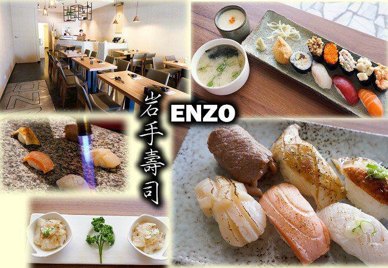
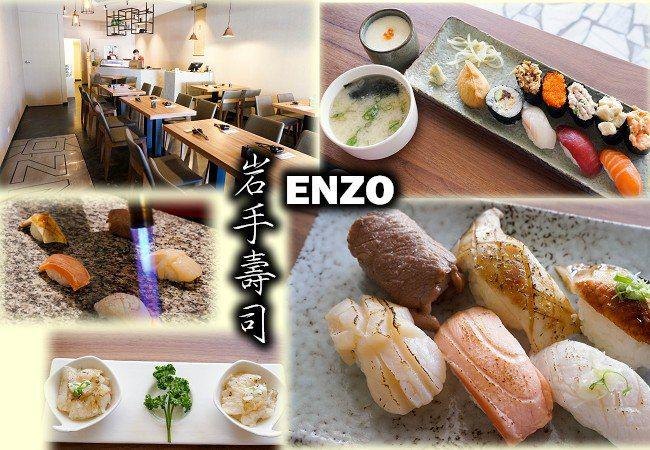
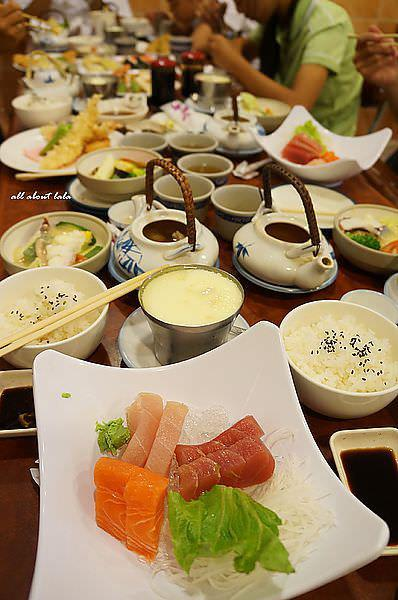
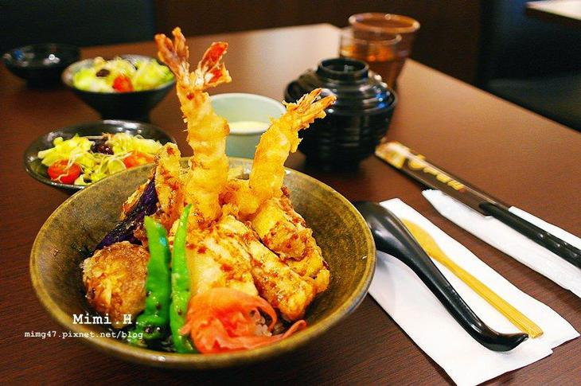
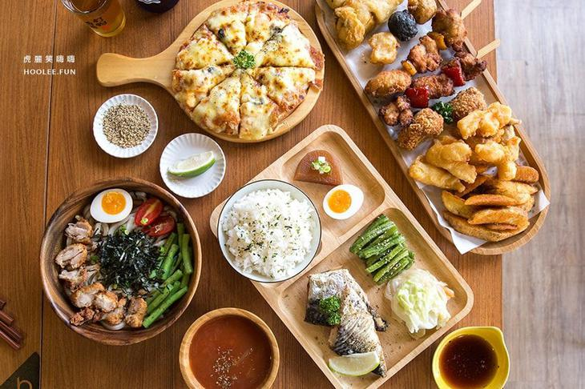
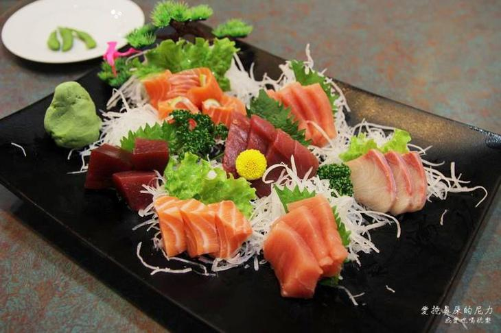

ENZO岩手壽司
難得在高雄又找到一間CP值蠻高的日本料理店，
而且它開在我常常經過的博愛路上， 可能因為招牌沒太顯眼，
所以我並沒有注意過它。
但是店門口和店內的設計走低調創意設計風格，個人還蠻喜歡的~
岩手壽司也是今年剛開幾個月的新店，平日中午前來客人並不多，
可能是因為地點的關係。
招牌和店門口有點落差感，店門口的設計讓人覺得這間店很有質感，價位也不低。

松川和風日式料理
松川和風日式料理，早已耳聞鹽埕區巷弄美食頗多，
又是一趟養豬之旅，怎麼每一次出來玩，到最後我都會以美食串起景點阿。
在去過隱藏著餐包界始祖-三郎餐包、阿綿麻糬…的巷弄後，
著來到步行即可抵達，高雄在地朋友推薦的一家餐廳，聽說是家平價好吃的日式料理呢!
看著外頭介紹的餐點，果真不貴平價的很，
看起來最便宜實惠的是蛋包飯、鮭魚炒飯、親子丼、其中親子丼還附湯，不到100元即可解決!!
地址：高雄市苓雅區仁義街2之3號1樓

隱身在住宅區中的日式食堂
戶谷川和食處以丼飯和生魚片壽司為主打，最熱賣的是丼飯，生食熟食都各有支持者。
價格不是走低價俗擱大碗，不過，這幾年吃下來，我倒是覺得以他們用的食材，非常對得起這價格。
戶谷川和食處可以這麼多年來在高雄美術館區，屹立不搖，也有不少公司或團體聚會包場，
直接開菜單請師傅配菜！蠻推薦給喜歡吃日式丼飯或生魚握壽司的老饕們啦！
地址：高雄市鼓山區美術東三路一號

洋流手作炸物
向來以品質超好的手工炸物，在高雄駁二小有名氣的洋流-簡餐/炸物/啤酒，
2017年中搬到捷運信義國小站的錦田路上。
新店除了繼續提供質感美味炸物，也推出了不少非油炸的米飯套餐，
藍色蝶豆花飯超吸睛，新店面復古文青風也更好拍照，
成為新的IG和FB打卡熱門聚會點！
地址：高雄市新興區錦田路101巷18號

天野日本料理
很適合家庭聚會的[天野日本料理]算很知名的老店家
價格方面也會稍微高單價一點，偶爾帶家人一起品味美食OK的拉～
帶有濃郁日式風格的建築，高雄老字號日本料理 連平常的生意都不錯，
假日更是要訂位喜歡吃日式料理、台式和菜都很適合來天野日本料理”。
地址：高雄市三民區澄清路428號